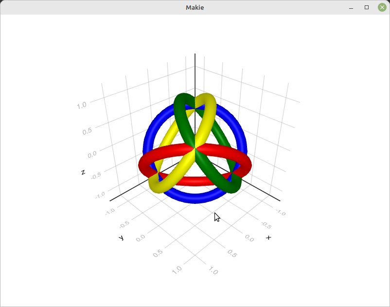

Drawing a torus with Julia
Posted on December 15, 2022
by Stéphane Laurent
I already showed how to draw a torus whose equator passes through three given points with three.js, Asymptote, R, POV-Ray, and Haskell. Here I have a method for Python, using PyVista, but it is a bit useless because once you know how to draw a circular path passing through three points you can “tubify” it with PyVista, that is to say you can add a radius to the path. Similarly, you can do that with the R package rgl by using the cylinder3d function.
Now I want to show how to do that with Julia. I’m using the Meshes package because I find it easy to use.
Here is the code:
using LinearAlgebra
using Meshes
# plane passing by points p1, p2, p3 #
function plane3pts(p1, p2, p3)
xcoef = (p1[2] - p2[2]) * (p2[3] - p3[3]) -
(p1[3] - p2[3]) * (p2[2] - p3[2])
ycoef = (p1[3] - p2[3]) * (p2[1] - p3[1]) -
(p1[1] - p2[1]) * (p2[3] - p3[3])
zcoef = (p1[1] - p2[1]) * (p2[2] - p3[2]) -
(p1[2] - p2[2]) * (p2[1] - p3[1])
offset = p1[1] * xcoef + p1[2] * ycoef + p1[3] * zcoef
return (normal = [xcoef, ycoef, zcoef], offset = offset)
end
# center, radius and normal of the circle passing by three points #
function circleCenterAndRadius(p1, p2, p3)
p12 = (p1 + p2) / 2
p23 = (p2 + p3) / 2
v12 = p2 - p1
v23 = p3 - p2
plane = plane3pts(p1, p2, p3)
A = transpose(hcat(plane.normal, v12, v23))
b = [plane.offset, sum(p12 .* v12), sum(p23 .* v23)]
center = inv(A) * b
r = LinearAlgebra.norm2(p1 - center)
return (center = center, radius = r, normal = plane.normal)
end
# key transformation
function transfoMatrix(p1, p2, p3)
crn = circleCenterAndRadius(p1, p2, p3)
center = crn.center
radius = crn.radius
normal = crn.normal
measure = LinearAlgebra.norm2(normal)
normal = normal / measure
s = sqrt(normal[1]^2 + normal[2]^2) # TODO: case s=0
u = [normal[2] / s, -normal[1] / s, 0]
v = LinearAlgebra.cross(normal, u)
m = vcat(hcat(u, v, normal, center), reshape([0, 0, 0, 1], 1, 4))
return (matrix = m, radius = radius)
end
# homogeneous coordinates to Euclidean coordinates
function asEuclidean(x)
return x[1:3] ./ fill(x[4], 3)
end
"""
torusMesh(R, r; nu = 50, nv = 30)
Mesh of a torus.
# Arguments
- `R`: major radius
- `r`: minor radius
- `nu`, `nv`: numbers of subdivions
"""
function torusMesh(R, r; nu = 50, nv = 30)
nunv = nu * nv
vs = Array{Float64}(undef, nunv, 3)
tris1 = Array{Int64}(undef, nunv, 3)
tris2 = Array{Int64}(undef, nunv, 3)
u_ = collect(LinRange(0, 2 * pi, nu + 1)[2:(nu+1)])
cosu_ = cos.(u_)
sinu_ = sin.(u_)
v_ = collect(LinRange(0, 2 * pi, nv + 1)[2:(nv+1)])
cosv_ = cos.(v_)
sinv_ = sin.(v_)
Rrcosv_ = R .+ r * cosv_
rsinv_ = r * sinv_
jp1_ = vcat(2:nv, 1)
j_ = 1:nv
for i = 1:(nu-1)
i_nv = i * nv
k1 = i_nv - nv
rg = (k1+1):i_nv
cosu_i = cosu_[i]
sinu_i = sinu_[i]
vs[rg, :] = hcat(cosu_i * Rrcosv_, sinu_i * Rrcosv_, rsinv_)
k_ = k1 .+ j_
l_ = k1 .+ jp1_
m_ = i_nv .+ j_
tris1[k_, :] = hcat(m_, l_, k_)
tris2[k_, :] = hcat(m_, i_nv .+ jp1_, l_)
end
i_nv = nunv
k1 = i_nv - nv
rg = (k1+1):i_nv
vs[rg, :] = hcat(Rrcosv_, fill(0, i_nv - k1), rsinv_)
l_ = k1 .+ jp1_
k_ = k1 .+ j_
tris1[k_, :] = hcat(j_, l_, k_)
tris2[k_, :] = hcat(j_, jp1_, l_)
triangles = vcat(tris1, tris2)
points = [Meshes.Point(tuple(v...)) for v in eachrow(vs)]
connections = Meshes.connect.([
tuple(t...) for t in eachrow(triangles)
], Meshes.Triangle)
return Meshes.SimpleMesh(points, connections)
end
"""
torusMesh(r, p1, p2, p3; nu = 50, nv = 30)
Mesh of a torus whose equator passes through three given points.
# Arguments
- `r`: minor radius
- `p1`, `p2`, `p3`: the three points
- `nu`, `nv`: numbers of subdivions
"""
function torusMesh(r, p1, p2, p3; nu = 50, nv = 30)
transfo = transfoMatrix(p1, p2, p3)
m = transfo.matrix
R = transfo.radius
mesh = torusMesh(R, r; nu = nu, nv = nv)
vertices = [Meshes.Point(
tuple(asEuclidean(m * vcat(Meshes.coordinates(v), 1)))...
) for v in Meshes.vertices(mesh)
]
return Meshes.SimpleMesh(vertices, Meshes.topology(mesh).connec)
endAnd an example:
using MeshViz
a = 1
p1 = [ a, -a, -a]
p2 = [ a, a, a]
p3 = [-a, -a, a]
p4 = [-a, a, -a]
mesh1 = torusMesh(0.1, p1, p2, p3)
mesh2 = torusMesh(0.1, p1, p2, p4)
mesh3 = torusMesh(0.1, p1, p3, p4)
mesh4 = torusMesh(0.1, p2, p3, p4)
function draw()
MeshViz.viz!(mesh2; color = :red)
MeshViz.viz!(mesh3; color = :blue)
MeshViz.viz!(mesh4; color = :green)
end
MeshViz.viz(mesh1; color=:yellow)
draw()